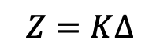
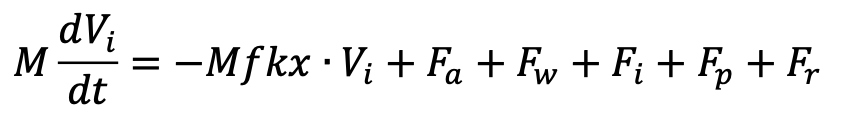
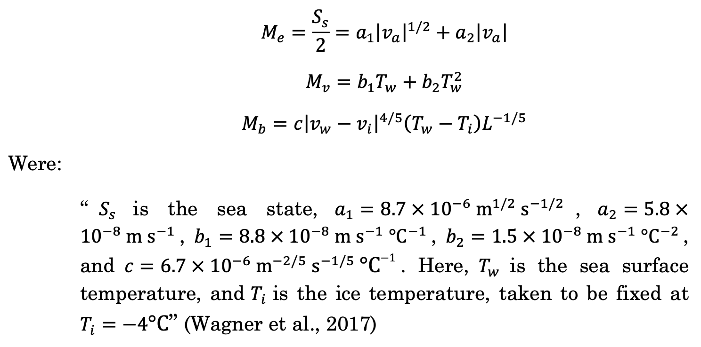
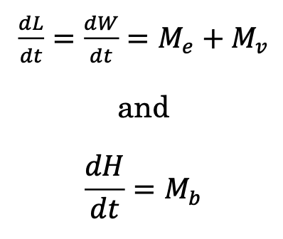
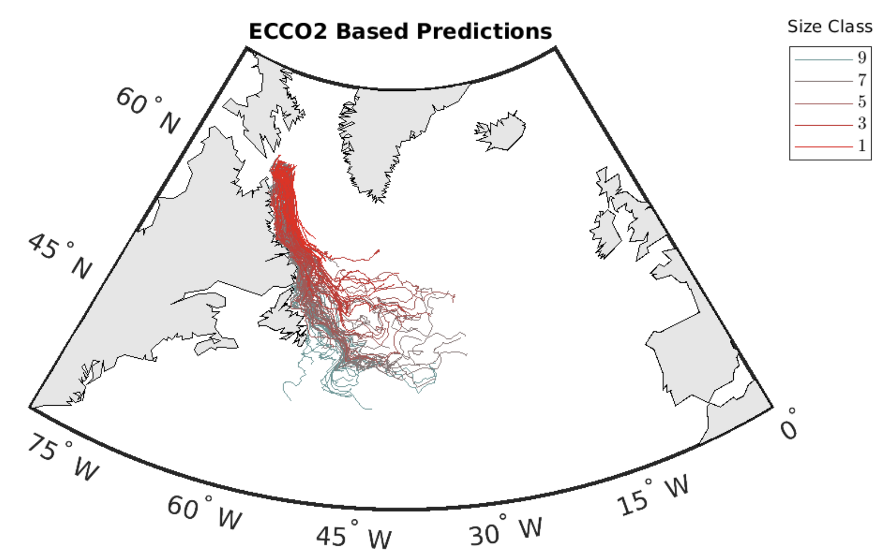

<div class="page" title="Page 1"><div class="layoutArea"><div class="column"><h2>Introduction</h2>
<p>This short essay will explore and contextualise the principles and methods at the centre of contemporary iceberg drift and decay mathematical models. To do so, it will first examine the incentives for institutional efforts to track drifting icebergs. Secondly, this paper will engage in an extensive introductory exploration of iceberg drift and decay approximation formulas and dynamic and thermodynamic models and assess their respective strengths and limitations. Finally, it will describe the process of running a modern drift and decay model simulation using MATLAB and report the raw simulation results.</p>
<h3>Incentives for Iceberg tracking</h3>
<p>Icebergs are large masses of freshwater ice that form by breaking apart from a glacier, ice shelf, or larger icebergs, a process known as calving (Iceberg | Ice Formation, n.d.). In the Antarctic Circle, icebergs calve from the floating ice shelves of the Antarctic continent, which results in large and tall icebergs with steep cliff-like sides and flat tops, known as tabular icebergs (Ibid). In the Arctic, icebergs calve from glaciers, particularly those of Greenland (Ibid). NOAA’s National Ocean Service defines minimum characteristics of icebergs (according to the standard set by the International Ice Patrol) as follows:</p>
<div class="page" title="Page 1"><div class="layoutArea"><div class="column">
<p>“To be classified as an iceberg, the height of the ice must be greater than 16 feet above sea level and the thickness must be 98-164 feet and the ice must cover an area of at least 5,382 square feet.” (US Department of Commerce, n.d.)</p>
<p>One incentive for iceberg tracking and monitoring is risk minimisation. While even the smallest ice objects that satisfy these criteria easily pose threats to ships and offshore ventures, among others, larger icebergs, which can reach a freeboard (height above the waterline) of above 100 metres and individual mass exceeding 10,000,000 tonnes (100 times the typical mass of the smallest icebergs) pose additional and greatly increased threats to their surroundings as they drift (Iceberg Classification Systems, n.d.).</p>
<div class="page" title="Page 1"><div class="layoutArea"><div class="column">
<p>Other incentives for iceberg monitoring are scientific: Melting icebergs could contain clues to the processes behind ice-shelf collapse (Icebergs | National Snow and Ice Data Center, n.d.). If so, their study could contribute to our understanding of global warming. As they melt, icebergs release freshwater into the ocean, suggesting that in large enough numbers, drifting icebergs could affect ocean circulation (Ibid). Furthermore, as they melt, icebergs disperse nutrients into the ocean, leaving trails of nutrient-rich freshwater, which attracts marine life and could therefore be of interest to marine biologists (Ibid).</p>
<div class="page" title="Page 2"><div class="layoutArea"><div class="column">
<p>Mathematical iceberg drift and decay models are powerful tools that, given accurate data, can assist researchers and institutions by predicting where they might expect to find icebergs or estimating the future drift of existing icebergs given an initial location to calculate from. These applications are desirable because of the high cost of real-world iceberg tracking, which is typically done via satellite imagery, aerial surveys, and sighting reporting from merchant and scientific ships (Icebergs | National Snow and Ice Data Center, n.d.).</p>
<div class="page" title="Page 2"><div class="layoutArea"><div class="column"><h2>Drift and Decay</h2>
<p>While some simple approximation formulas exist to estimate iceberg drift and decay, these tend to produce somewhat caricatured predictions that are unsuitable for most research purposes. Among more complex mathematical models, some are probabilistic, but most sophisticated contemporary models are deterministic and incorporate thermodynamics in their predictions. This section will present iceberg drift and decay approximation methods, explore the principal essential components of these modern models, and assess their strengths and limitations.</p>
<h3>Approximation Formulas</h3>
<p>Although they lack precision, approximation rules for iceberg drift and decay are helpful in that they are speedy.</p>
<p>A frequent estimate of iceberg drift velocity is that it approximately equals 2% of the wind velocity relative to the ocean current (Smith, 1993). The approximation holds true for most cases in the Arctic, where small icebergs and strong winds are common, but does not in the Antarctic, where the combination of weak winds and generally larger icebergs render the effect of wind on iceberg drift negligible (Wagner et al., 2017).</p>
<p>In their report for the CRREL titled Some Elements of Iceberg Technology, W. F. Weeks and M. Mellor propose the following iceberg ice loss formula:</p>
<figure class="post__image post__image--center"></figure><div class="page" title="Page 2"><div class="layoutArea"><div class="column">
<p>Where Z is the total ice loss at any point of an iceberg’s journey in metres, ∆ is the sum of mean daily water temperatures around the draught of the iceberg for every day of an iceberg’s drift in degrees Celsius, and K is a constant ~ 0.12. This formula appears rather infrequently in scientific literature and should be used cautiously.</p>
<div class="page" title="Page 3"><div class="layoutArea"><div class="column">
<p>While potentially useful for navigation and small-scale, short-term predictions of iceberg drift and decay, these shortcuts tend to produce skewed results, which can deviate significantly from real-world observations. For this reason, scientists should generally avoid them in research.</p>
<div class="page" title="Page 3"><div class="layoutArea"><div class="column"><h3>Dynamic and Thermodynamic Models</h3>
<p>Modelling the dynamics and thermodynamics of icebergs, published in 1997 and co-authored by Grant R. Bigg, Martin R. Wadley, David P. Stevens, and John A. Johnson, is a foundational paper for the admittedly very niche field of iceberg drift modelling. The paper proposes the following momentum equation of horizontal iceberg motion:</p>
<figure class="post__image post__image--center"></figure>
<p>Where M is the iceberg's mass (kg), and V<em>i is the horizontal velocity (m<em>s^-1). The components of the equation F</em>a, F<em>w, F</em>i, F<em>p, and F</em>r are respectively air and wind drag (F<em>a), water drag (F</em>w), sea ice drag (F<em>i), the horizontal pressure gradient force the water around the iceberg exerts on the volume that the iceberg displaces (F</em>p), water and wave drag (F<em>w), and the wave radiation force (F</em>r), while f is the Coriolis parameter, a value equal to 2Ω </em> sin phi, where Ω is the rate of rotation of the Earth, and phi is latitude (Holton &amp; Hakim, 2012) (reported in rad*s^-1) (Bigg et al., 1997).</p>
<div class="page" title="Page 3"><div class="layoutArea"><div class="column">
<p>Since the mass of an iceberg reduces as the iceberg drifts, melts, and sometimes breaks up into smaller pieces, it is important to note that in practice, the equation described above only reveals an iceberg’s momentum at a given point of its life: it does not account for iceberg decay. The equation returns the momentum of any iceberg given its mass and velocity. However, alone, its applications to iceberg drift modelling are limited because drift is affected by each modelled iceberg’s length, width, and mass (Wagner et al., 2017). To account for the gradual change in mass and dimensions of drifting icebergs, Bigg et al. (1997) describe and propose methods to jointly model iceberg thermodynamics. They write:</p>
<div class="page" title="Page 3"><div class="layoutArea"><div class="column"><blockquote>
<p>“The melting of an iceberg constantly changes its mass and shape, and thus must be modelled in any long-term simulation of trajectories... The melting/erosional processes that have been included are ‘basal’ convection or turbulent heat transfer, buoyant convection, wave erosion, solar and sensible heating, and sublimation.” (p. 117)</p>
</blockquote><div class="page" title="Page 4"><div class="layoutArea"><div class="column">
<p>Among the melt processes they list, the dominant three according to Till J. W. Wagner, Rebecca W. Dell, and Ian Eisenman (2017) are wind-driven wave erosion (mechanical) M<em>e, turbulent basal melt (thermal) – melting at the base of the iceberg; described as turbulent because the melting basal layer is sandwiched between the cold of the ice and the relative warmth of the water, forming a transitional volume of turbulent convection (Ahlers, 2009) – M</em>b, and thermal sidewall erosion from buoyant convection – erosion of iceberg sidewalls from changes in ice surface temperature due to variations in iceberg buoyancy (Convection, n.d.) – noted M_v. In their paper, An Analytical Model of Iceberg Drift, the authors incorporate these factors in their own iceberg drift and decay model but discard the other thermodynamic factors described by Bigg et al. (1997), which they assert are negligible in comparison to the others. Their formulation of the equations for these three factors are:</p>
<figure class="post__image post__image--center"></figure><div class="page" title="Page 4"><div class="layoutArea"><div class="column">
<p>For the purposes of this paper, it will suffice to mention that these equations solve for the changes in mass, length (L), width (W), and height (H) of modelled icebergs, and that the dimensions of modelled icebergs change as</p>
<figure class="post__image post__image--center"></figure><div class="page" title="Page 4"><div class="layoutArea"><div class="column">
<p>As should be evident, solving these equations requires data on the conditions of any modelled iceberg’s immediate environment, most importantly sea state, sea surface temperature, and atmospheric temperature estimates. Many models, including the one proposed by Wagner et al. (2017) source these data from</p>
<div class="page" title="Page 5"><div class="layoutArea"><div class="column">
<p>NASA’s “Estimating the Circulation and Climate of the Ocean” (ECCO) consortium, or NCAR and UCAR’s Community Climate System Model (CCSM).</p>
<p>By sequentially solving the iceberg momentum and decay equations, feeding the results of the momentum equation into the decay equations and vice versa, we can calculate and plot the trajectory of an iceberg starting at any given latitudinal and longitudinal coordinates (a monumental task which researchers typically undertake programmatically) (Eisenman et al., 2021). The accuracy of the results produced using this method makes the use of momentum and decay equations in models attractive, and their use is now common in iceberg drift and decay models. Variations of the formulas first described by Bigg et al. (1997) are at the core of many iceberg drift and decay modelling tools today, programs such as MITberg, a MATLAB project developed by Alan Condron at the University of Massachusetts and designed to be used with MIT’s general circulation model (MITgcm), (MITberg: Icebergs and Climate Change, n.d.), itself a program designed to model fluid dynamics in the Earth ocean and atmosphere (MITgcm User Manual, n.d.). Other examples include OpenBerg, a python module for use with the python ocean drift modelling library OpenDrift (Opendrift.Models.Openberg — OpenDrift Documentation, n.d.), Elmer/Ice, an add-on package to the Elmer FEM (finite element method) program, which is designed to model ice dynamics (Elmer Ice - Home, n.d.), and FESOM-IB, a module designed for the Finite-Element/VolumE Sea-ice Ocean Model (Rackow et al., 2013).</p>
<div class="page" title="Page 5"><div class="layoutArea"><div class="column">
<p>The main advantages of dynamic and thermodynamic deterministic models of iceberg drift and decay over approximations and probabilistic models reside in the increased precision and reliability of their results when compared to real-world observational data (for an example, see Figure 1). In fact, they so surpass probabilistic models that these have largely fallen out of use. However, with this gained precision come challenges and drawbacks: high computational power requirements for long time scale or large iceberg sample simulations due to the volume of calculations and data which the models must process with each new drift prediction step, and lower accessibility to laypeople due to the steep learning curves and sometimes high financial costs associated with the use of the frameworks (hardware and software) through which these models are accessible (typical software frameworks are high-level sometimes proprietary programs or programming languages such as MATLAB, which hosts two of the models mentioned in this paper, the Lagrangian model proposed by Wagner et al. (2017), and MITberg)</p>
<figure class="post__image"><figure class="post__image post__image--center"></figure><figcaption><div class="page" title="Page 6"><div class="layoutArea"><div class="column">
<p>a) Observed iceberg trajectories using data from the Antarctic Iceberg Tracking Database.<br/>b) One-year duration simulated trajectories for 200 icebergs of lengths ranging between 15 and 20 km using the drift and decay model proposed by Wagner et al. (2017). (Journal of Physical Oceanography 47, 7; 10.1175/JPO-D-16-0262.1)</p>
</figcaption></figure>
<div class="page" title="Page 6"><div class="layoutArea"><div class="column"><h2>Running a drift and decay model</h2>
<p>The model proposed by Wagner et al. (2017) is publicly available at http://eisenman.ucsd.edu/code.html, and as a MATLAB code repository on GitHub. This section will shortly describe the process of setting up and running the model using MATLAB online and report the model output generated using the described setup program parameters.</p>
<p>After downloading the model repository from GitHub and uploading it to a directory of MATLAB Drive, I accessed the main program by opening the model file named “iceberg<em>model</em>WDE17.m”. I then confirmed that my MATLAB license included access to the MATLAB mapping toolbox, which the model requires to generate iceberg drift trail maps (Eisenman et al., 2021). The program code is clear and generously annotated with usage instructions. Its first four sections allow the user to define their own model parameters. Respectively these are: 1) a model data input section where the user can specify the ocean surface and ambient atmospheric temperature data which the model requires and its source (ECCO or CCSM), 2) an iceberg parameter and analytical expression definition section in which properties such as air density, water density, or C' (see the iceberg decay equations described in section II.0b), 3) a space domain definition section in which the user specifies the area in which the model will compute iceberg trajectories as well as the boundaries for map figure generation, and 4) a run parameter definition section in which the user defines the time step length, the number of iceberg trajectories to compute, iceberg seed locations, seeding spacing, iceberg dimensions, and other settings specific to the desired simulation (Eisenman et al., 2021).</p>
<div class="page" title="Page 7"><div class="layoutArea"><div class="column">
<p>For demonstration purposes, I run the model here using mostly default program settings, having only adjusted the number of iceberg trajectories to compute and the iceberg start seeds. The code output reported below are the results of a 1-year-long model projection for 25 icebergs based on 1992 ECCO data:</p>
<figure class="post__image"><figure class="post__image post__image--center"></figure><figcaption><div class="page" title="Page 7"><div class="layoutArea"><div class="column">
<p>Wagner et al. model map output showing iceberg trails grouped by size class.</p>
</figcaption></figure>
<div class="page" title="Page 8"><div class="layoutArea"><div class="column"><h2>Concluding statement</h2>
<p>Mathematical models of iceberg drift and decay are incredibly useful tools that can return results accurate enough to have consequential applications to scientific research, navigation, and security monitoring, but their high computing power requirements and relatively low accessibility to laypeople limit their use outside of well-funded research projects and state-run organisations. As a student, the MATLAB licence I bought for this project cost me $125 US, but for commercial or professional uses, the same license would have cost over $2000. Despite their efficacy and reliability, the high financial or material costs of entry and overall complexity of iceberg drift and decay modelling programs remain a major obstacle to their widespread adoption.</p>
<div class="layoutArea"><div class="column"><h2>Sources Cited</h2>
<p>Ahlers, G. (2009). Turbulent convection. Physics, 2. https://physics.aps.org/articles/v2/74</p>
<p>Bigg, G. R., Wadley, M. R., Stevens, D. P., &amp; Johnson, J. A. (1997). Modelling the dynamics and thermodynamics of icebergs. Cold Regions Science and Technology, 26(2), 113–135. https://doi.org/10.1016/S0165-232X(97)00012-8</p>
<p>Convection. (n.d.). Retrieved 4 March 2021, from https://www.chemeurope.com/en/encyclopedia/Convection.html#Buoyancy<em>induced</em> convection<em>not</em>due<em>to</em>heat</p>
<div class="page" title="Page 9"><div class="layoutArea"><div class="column">
<p>Eisenman, I., Dell, R. W., &amp; Wagner, T. J. W. (2021). Model of iceberg drift and decay (p. 5436915492 Bytes) [Data set]. figshare. https://doi.org/10.6084/M9.FIGSHARE.12857672</p>
<p>Elmer Ice–Home. (n.d.). Retrieved 4 March 2021, from https://elmerice.elmerfem.org/ Holton, J., &amp; Hakim, G. (2012). An Introduction to Dynamic Meteorology, (5th ed., Vol.88).</p>
<p>Iceberg | ice formation. (n.d.). Encyclopedia Britannica. Retrieved 4 March 2021, from https://www.britannica.com/science/iceberg</p>
<p>Iceberg Classification Systems. (n.d.). Retrieved 4 March 2021, from https://www.universalcompendium.com/tables/science/iceb.htm</p>
<p>MITberg: Icebergs and Climate Change. (n.d.). Retrieved 4 March 2021, from http://www.geo.umass.edu/faculty/condron/MITberg/download.htm</p>
<p>MITgcm user manual. (n.d.). Retrieved 4 March 2021, from https://mitgcm.readthedocs.io/en/latest/</p>
<p>opendrift.models.openberg–OpenDrift documentation. (n.d.). Retrieved 4 March 2021, from https://opendrift.github.io/autoapi/opendrift/models/openberg/index.html</p>
<p>Quick Facts on Icebergs | National Snow and Ice Data Center. (n.d.). Retrieved 4 March 2021, from https://nsidc.org/cryosphere/quickfacts/icebergs.html</p>
<p>Rackow, T., Wesche, C., Timmermann, R., &amp; Juricke, S. (2013). Modelling Southern Ocean iceberg drift and decay with FESOM-IB. EPIC3European Geophysical Union, Vienna, Austria, 2013-04-07-2013-04-12. European Geophysical Union, Vienna, Austria. https://epic.awi.de/id/eprint/37482/</p>
<p>Smith, S. D. (1993). Hindcasting iceberg drift using current profiles and winds. Cold Regions Science and Technology, 22(1), 33–45. https://doi.org/10.1016/0165- 232X(93)90044-9</p>
<p>US Department of Commerce, N. O. and A. A. (n.d.). What is an iceberg? Retrieved 4 March 2021, from https://oceanservice.noaa.gov/facts/iceberg.html</p>
<p>Wagner, T. J. W., Dell, R. W., &amp; Eisenman, I. (2017). An Analytical Model of Iceberg Drift. Journal of Physical Oceanography, 47(7), 1605–1616. https://doi.org/10.1175/JPO-D-16-0262.1</p>
<p>Weeks, W. F., &amp; Mellor, M. (1978). SOME ELEMENTS OF ICEBERG TECHNOLOGY. In A. A. Husseiny (Ed.), Iceberg Utilization (pp. 45–98). Pergamon. https://doi.org/10.1016/B978-0-08-022916-4.50015-7</p>